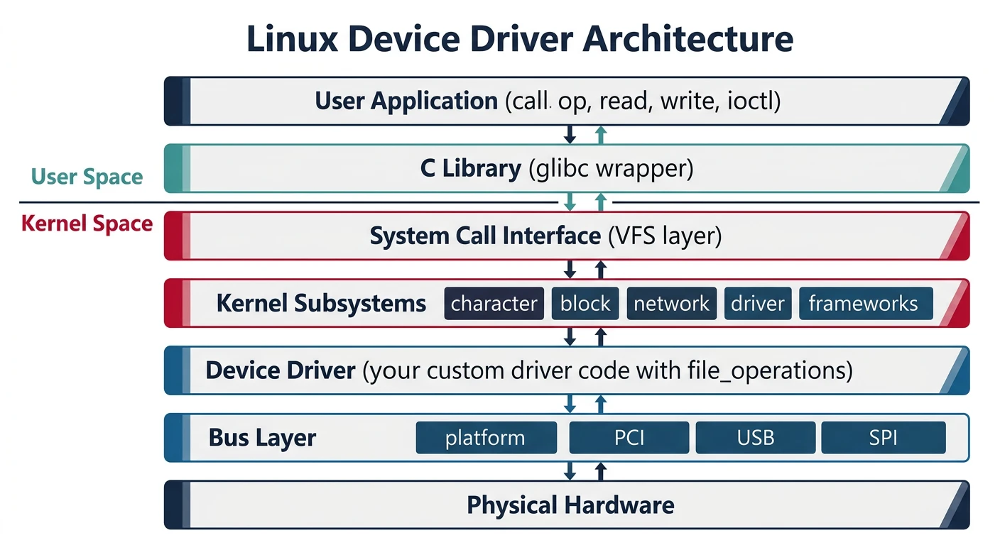
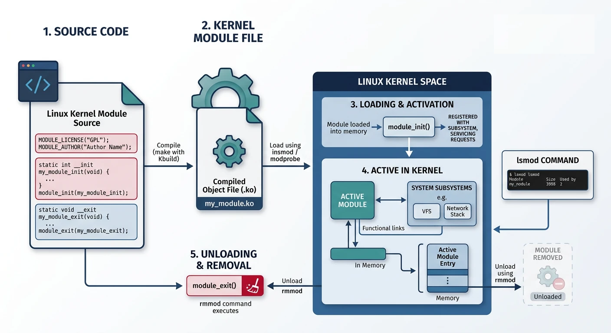
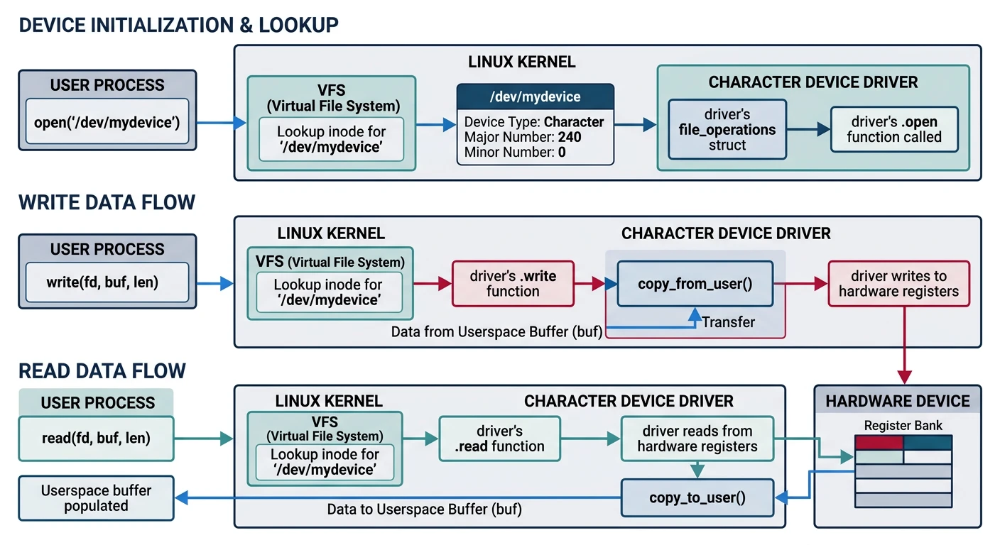
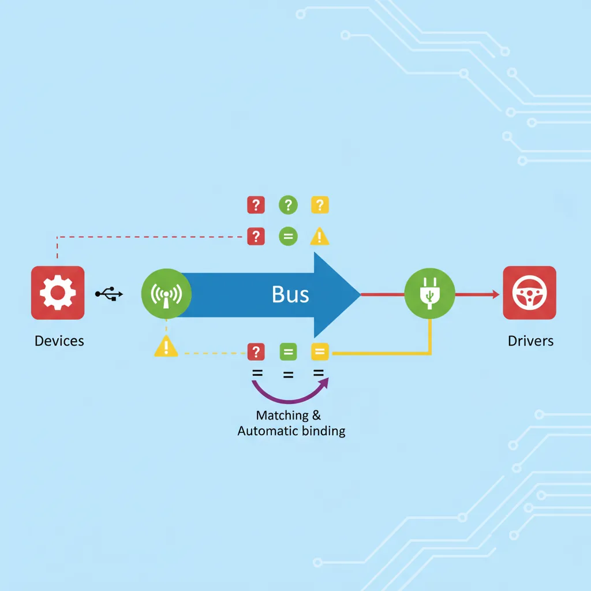
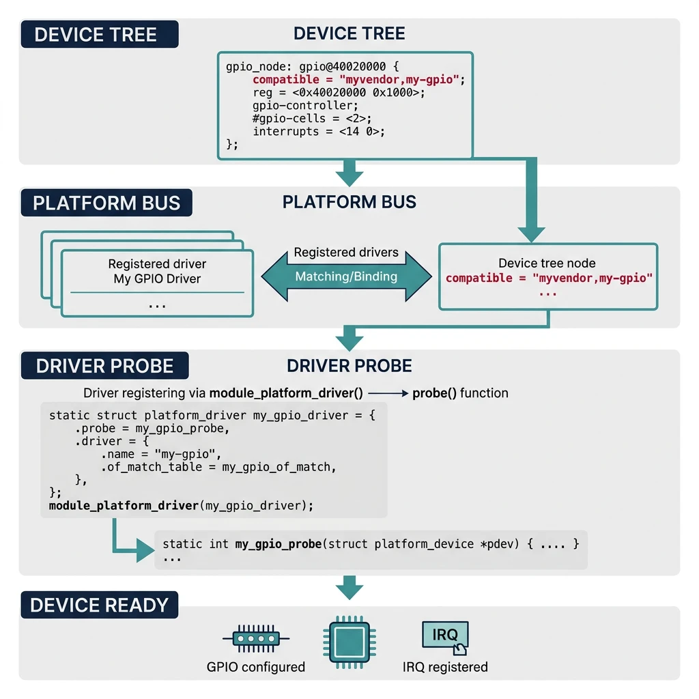

Introduction to Device Drivers
Embedded Systems Mastery
Fundamentals & Architecture
Microcontrollers, memory, interruptsSTM32 & ARM Cortex-M Development
ARM architecture, peripherals, HALRTOS Fundamentals (FreeRTOS/Zephyr)
Task management, scheduling, synchronizationCommunication Protocols Deep Dive
UART, SPI, I2C, CAN, USBEmbedded Linux Fundamentals
Linux kernel, userspace, filesystemU-Boot Bootloader Mastery
Boot process, configuration, customizationLinux Device Drivers
Character, platform, network driversLinux Kernel Customization
Kernel configuration, modules, debuggingAndroid System Architecture
Android layers, services, frameworkAndroid HAL & Native Development
HAL interfaces, NDK, JNIAndroid BSP & Kernel
BSP development, kernel integrationDebugging & Optimization
JTAG, GDB, profiling, optimizationAUTOSAR & EB Tresos
AUTOSAR architecture, MCAL, MPU protectionA device driver is kernel code that interfaces between hardware and userspace applications. Drivers abstract hardware complexity—applications use standard system calls (open, read, write) while drivers handle register-level communication.

Driver Types
Linux Driver Categories
- Character Drivers: Sequential byte streams (serial ports, GPIO, sensors)
- Block Drivers: Random access blocks (disks, flash, SD cards)
- Network Drivers: Packet-based (Ethernet, WiFi, CAN)
Kernel Modules Basics
Kernel modules can be loaded/unloaded at runtime without rebooting—essential for driver development and debugging.

// hello_module.c - Minimal kernel module
#include
#include
#include
MODULE_LICENSE("GPL");
MODULE_AUTHOR("Wasil Zafar");
MODULE_DESCRIPTION("Hello World Kernel Module");
MODULE_VERSION("1.0");
static int __init hello_init(void)
{
pr_info("Hello, Kernel World!\n");
return 0; // 0 = success, negative = error
}
static void __exit hello_exit(void)
{
pr_info("Goodbye, Kernel World!\n");
}
module_init(hello_init);
module_exit(hello_exit);
# Makefile for kernel module
obj-m += hello_module.o
KERNEL_DIR ?= /lib/modules/$(shell uname -r)/build
all:
make -C $(KERNEL_DIR) M=$(PWD) modules
clean:
make -C $(KERNEL_DIR) M=$(PWD) clean
# Build and test
make
sudo insmod hello_module.ko # Load module
lsmod | grep hello # Verify loaded
dmesg | tail -5 # Check kernel log
sudo rmmod hello_module # Unload module
Character Device Drivers
Character drivers create device nodes in /dev/ that applications can open, read, and write.

// simple_char.c - Character device driver
#include
#include
#include
#include
#include
#include
#define DEVICE_NAME "simple_char"
#define CLASS_NAME "simple"
#define BUFFER_SIZE 256
static int major_number;
static struct class *device_class;
static struct device *device;
static char kernel_buffer[BUFFER_SIZE];
static int buffer_size = 0;
// File operations
static int dev_open(struct inode *inodep, struct file *filep)
{
pr_info("Device opened\n");
return 0;
}
static int dev_release(struct inode *inodep, struct file *filep)
{
pr_info("Device closed\n");
return 0;
}
static ssize_t dev_read(struct file *filep, char __user *buffer,
size_t len, loff_t *offset)
{
int bytes_to_read = min(len, (size_t)(buffer_size - *offset));
if (bytes_to_read <= 0)
return 0; // EOF
if (copy_to_user(buffer, kernel_buffer + *offset, bytes_to_read))
return -EFAULT;
*offset += bytes_to_read;
pr_info("Read %d bytes\n", bytes_to_read);
return bytes_to_read;
}
static ssize_t dev_write(struct file *filep, const char __user *buffer,
size_t len, loff_t *offset)
{
int bytes_to_write = min(len, (size_t)BUFFER_SIZE);
if (copy_from_user(kernel_buffer, buffer, bytes_to_write))
return -EFAULT;
buffer_size = bytes_to_write;
pr_info("Wrote %d bytes\n", bytes_to_write);
return bytes_to_write;
}
static struct file_operations fops = {
.owner = THIS_MODULE,
.open = dev_open,
.release = dev_release,
.read = dev_read,
.write = dev_write,
};
static int __init char_init(void)
{
// Register character device
major_number = register_chrdev(0, DEVICE_NAME, &fops);
if (major_number < 0) {
pr_err("Failed to register major number\n");
return major_number;
}
// Create device class
device_class = class_create(CLASS_NAME);
if (IS_ERR(device_class)) {
unregister_chrdev(major_number, DEVICE_NAME);
return PTR_ERR(device_class);
}
// Create device node /dev/simple_char
device = device_create(device_class, NULL, MKDEV(major_number, 0),
NULL, DEVICE_NAME);
if (IS_ERR(device)) {
class_destroy(device_class);
unregister_chrdev(major_number, DEVICE_NAME);
return PTR_ERR(device);
}
pr_info("Device registered: /dev/%s (major %d)\n",
DEVICE_NAME, major_number);
return 0;
}
static void __exit char_exit(void)
{
device_destroy(device_class, MKDEV(major_number, 0));
class_destroy(device_class);
unregister_chrdev(major_number, DEVICE_NAME);
pr_info("Device unregistered\n");
}
module_init(char_init);
module_exit(char_exit);
MODULE_LICENSE("GPL");
MODULE_AUTHOR("Wasil Zafar");
MODULE_DESCRIPTION("Simple Character Device Driver");
# Test the driver
sudo insmod simple_char.ko
ls -l /dev/simple_char
echo "Hello Driver" | sudo tee /dev/simple_char
sudo cat /dev/simple_char
Linux Device Model
The Linux device model organizes hardware into buses, devices, and drivers—enabling automatic binding and power management.

- Bus: Communication protocol (PCI, USB, I2C, SPI, platform)
- Device: Hardware described by device tree or enumeration
- Driver: Code that controls a specific device type
- Binding: Kernel matches devices to compatible drivers
Platform Drivers
Platform drivers are for non-discoverable devices (GPIOs, on-chip peripherals) described in device tree.

// platform_gpio.c - Platform driver example
#include
#include
#include
#include
#include
struct gpio_led_data {
struct gpio_desc *gpio;
};
static int gpio_led_probe(struct platform_device *pdev)
{
struct gpio_led_data *data;
data = devm_kzalloc(&pdev->dev, sizeof(*data), GFP_KERNEL);
if (!data)
return -ENOMEM;
// Get GPIO from device tree
data->gpio = devm_gpiod_get(&pdev->dev, "led", GPIOD_OUT_LOW);
if (IS_ERR(data->gpio)) {
dev_err(&pdev->dev, "Failed to get GPIO\n");
return PTR_ERR(data->gpio);
}
platform_set_drvdata(pdev, data);
// Turn on LED
gpiod_set_value(data->gpio, 1);
dev_info(&pdev->dev, "LED GPIO initialized\n");
return 0;
}
static int gpio_led_remove(struct platform_device *pdev)
{
struct gpio_led_data *data = platform_get_drvdata(pdev);
gpiod_set_value(data->gpio, 0);
dev_info(&pdev->dev, "LED GPIO removed\n");
return 0;
}
// Device tree matching
static const struct of_device_id gpio_led_of_match[] = {
{ .compatible = "mycompany,gpio-led" },
{ }
};
MODULE_DEVICE_TABLE(of, gpio_led_of_match);
static struct platform_driver gpio_led_driver = {
.probe = gpio_led_probe,
.remove = gpio_led_remove,
.driver = {
.name = "gpio-led",
.of_match_table = gpio_led_of_match,
},
};
module_platform_driver(gpio_led_driver);
MODULE_LICENSE("GPL");
MODULE_DESCRIPTION("GPIO LED Platform Driver");
// Corresponding device tree entry
my_led: led@0 {
compatible = "mycompany,gpio-led";
led-gpios = <&gpio1 17 GPIO_ACTIVE_HIGH>;
status = "okay";
};
Interrupt Handling
// Interrupt handling in drivers
#include
static irqreturn_t my_irq_handler(int irq, void *dev_id)
{
struct my_device *dev = dev_id;
// Check if this interrupt is for us
if (!check_interrupt_pending(dev))
return IRQ_NONE;
// Clear interrupt flag
clear_interrupt(dev);
// Schedule bottom half for heavy processing
tasklet_schedule(&dev->tasklet);
return IRQ_HANDLED;
}
// In probe function
static int my_probe(struct platform_device *pdev)
{
int irq, ret;
// Get IRQ from device tree
irq = platform_get_irq(pdev, 0);
if (irq < 0)
return irq;
// Request IRQ
ret = devm_request_irq(&pdev->dev, irq, my_irq_handler,
IRQF_SHARED, "my_device", dev);
if (ret) {
dev_err(&pdev->dev, "Failed to request IRQ\n");
return ret;
}
return 0;
}
Memory Management in Drivers
// Kernel memory allocation
#include
// kmalloc - small, contiguous allocations
void *ptr = kmalloc(size, GFP_KERNEL);
kfree(ptr);
// kzalloc - zeroed memory
void *ptr = kzalloc(size, GFP_KERNEL);
// devm_* - device-managed (auto-freed on driver removal)
void *ptr = devm_kzalloc(&pdev->dev, size, GFP_KERNEL);
// vmalloc - large, virtual contiguous
void *ptr = vmalloc(large_size);
vfree(ptr);
// I/O memory mapping
void __iomem *base = devm_ioremap_resource(&pdev->dev, res);
u32 val = readl(base + OFFSET);
writel(new_val, base + OFFSET);
DMA & Data Transfer
// DMA memory allocation
#include
// Allocate coherent DMA buffer (no cache issues)
dma_addr_t dma_handle;
void *cpu_addr = dma_alloc_coherent(&pdev->dev, size,
&dma_handle, GFP_KERNEL);
// Use dma_handle for hardware, cpu_addr for CPU
// ...
dma_free_coherent(&pdev->dev, size, cpu_addr, dma_handle);
// Streaming DMA (for existing buffers)
dma_addr_t dma_addr = dma_map_single(&pdev->dev, buffer, size,
DMA_TO_DEVICE);
// Configure hardware with dma_addr
// ...
dma_unmap_single(&pdev->dev, dma_addr, size, DMA_TO_DEVICE);
Debugging Device Drivers
# Kernel logging
dmesg -w # Follow kernel log
pr_info("..."); # Info level
pr_err("..."); # Error level
pr_debug("..."); # Debug (needs CONFIG_DYNAMIC_DEBUG)
# Dynamic debug
echo "file my_driver.c +p" > /sys/kernel/debug/dynamic_debug/control
# Module info
modinfo my_driver.ko
# sysfs inspection
ls /sys/bus/platform/drivers/my_driver/
ls /sys/class/my_class/
# ftrace (function tracing)
echo function > /sys/kernel/debug/tracing/current_tracer
echo my_probe > /sys/kernel/debug/tracing/set_ftrace_filter
cat /sys/kernel/debug/tracing/trace
Conclusion & What's Next
You've learned the foundations of Linux device driver development—kernel modules, character drivers, platform drivers, interrupts, and memory management. Driver development requires careful attention to kernel APIs and memory safety.
- Modules can be loaded/unloaded dynamically
- Character drivers use file_operations for I/O
- Platform drivers match device tree entries
- Use devm_* functions for automatic cleanup
- DMA requires careful memory management
In Part 8, we'll explore Linux Kernel Customization—configuring, building, and modifying the kernel for embedded systems.